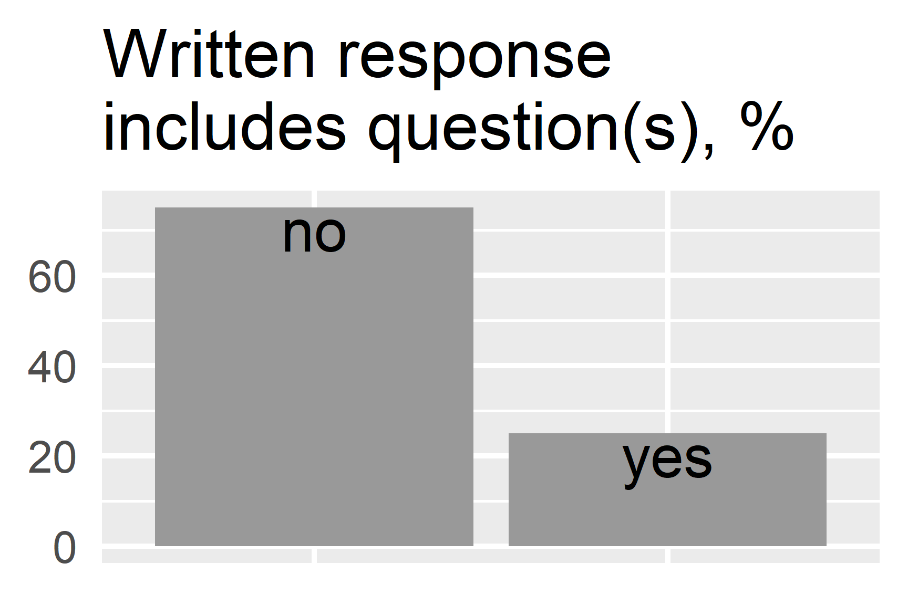
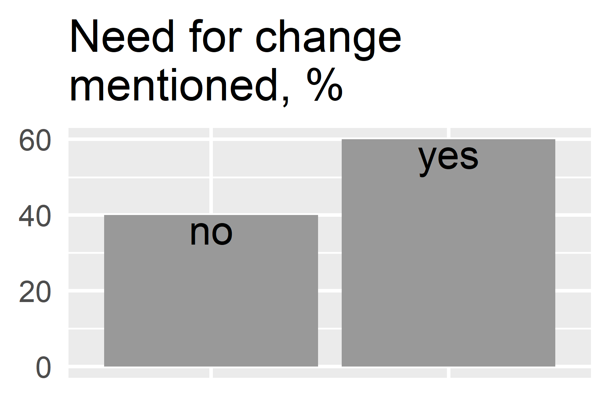

ChatGPT and the new text generators
Workshop feedback report and a survey
Andres Karjus (Tallinn University / Datafigure OÜ)
27.02.2023
Before getting into the report, please fill out this short AI opinion survey. It’s multiple choice, ~3-4 minutes to complete, but will hopefully give us an idea where university staff currently stands on these issues: LINK
Overview
Three workshops, 2 in Estonian and 1 in English, were held at Tallinn University during 13-22.02.2023, attended by a total of 127 university employees. During these workshops, the instructor provided an overview of the applications of generative artificial intelligence, with a focus on text generators such as ChatGPT. Its capabilities were also tested live in the classroom.


In the second half of the workshop, problem-centered discussions took place in small groups, followed by a summarizing joint discussion. In order to find answers to the proposed questions, a total of 21 groups were formed across the three workshops, which generally focused on addressing 1-2 questions. Feedback, ideas, and problems were noted down, with a total of 40 written group responses collected.
It is evident that limiting or banning the usage of AI-driven writing tools is essentially impossible (except perhaps using paper and pen during exams where electronic devices, including smartwatches, would not be available to the examinees). However, it is not clear whether limiting these tools is even necessary. Rather, they are seen as potentially useful new tools, and it should be taught to both students and teaching staff how to responsibly and meaningfully use them (as they are already being used anyway). Nevertheless, there are different opinions (e.g. “ChatGPT is not plagiarism, but it is cheating”).
Several university employees mentioned that they already use ChatGPT, including for writing research articles, programming, and preparing teaching materials and documents. It is important to note that this does not mean that it is used to write entire pieces of work from start to finish, but rather that ChatGPT can be used for various practical purposes, including paraphrasing, grammar checking, and generating templates for exercises to be used in teaching (which of course need to be checked manually).
Teaching and evaluation in the new situation
The consensus seems to be that there is a need to at least rethink assessment and teaching methods, but perhaps to make some changes as well. It was highlighted that one solution would be to move towards assessment methods centered around direct communication, including conversations, oral exams, presentations, and defenses (“returning to the Socratic method,” as one lecturer put it). It was also suggested that when it comes to submitted work, there should be an obligation to demonstrate the original source of one’s ideas, for example, through screenshots or links, and in theses, it should be clear where and how data was collected. It appears that there is general agreement that plain summarizing formats and reports may have outlived their usefulness. When discussing assessment, questions were raised about the assessment system as a whole. Although only a few of the discussion questions pertained to assessment, it was mentioned in nearly half of the written group responses.

However, there is also a keen awareness that revising assessment methods and materials, increasing the proportion of oral exams or process-oriented work, and more closely checking the sources in written work - all take extra time for the lecturer. It is unclear where this additional time should come from. Large courses with over a hundred students are seen as potentially problematic, as the use of any “Socratic methods” in such cases is a challenging.
“Are we evaluating the student’s outcome, or their learning process?”
At the same time, it was repeatedly emphasized that we should not assume that students would want to cheat or plagiarize at the first opportunity: “people have come to the university to learn.” Nevertheless, it was noted that if a student is under time pressure (due to personal issues or other obligations such as work), using AI for certain types of tasks could be a tempting solution. Therefore, it is important to consider which tasks motivate students to do the work themselves and learn through the work (possibly using AI as an aid, not as a substitute). The question remains as to how to equally assess works, when it is suspected (although of course cannot be proven) that one student has generated their work in just a few minutes, while another has put in hours or days.
Who makes the rules?
While some expressed the view that there may be no need for changes in education, the majority appeared to believe that some change is inevitable. In general, it should be decided who decides on these issues and sets the rules. Several people said that the lecturer should still have the autonomy to decide for themselves, but it was also suggested that clarity from the university or even the government would be helpful, and general rules or best practices should be agreed upon. In the final discussion of all three workshops, the idea emerged that in every larger unit, it would be good to appoint or hire a competent spokesperson or commissioner to deal with these issues. Particularly so given the fast pace of things - for example, ChatGPT is currently one of the most powerful models, but pales in comparison to the even more powerful tools currently being developed that will be released soon enough.
In light of the likely growing amount of additional work and the fact that such tools allow some things to be done more productively or automated, one cannot ignore the question of whether lecturers could use them for evaluating and providing feedback on student work. There were different opinions on this, but no one explicitly against. The question is rather whether, if it is done, it should be transparent, meaning whether the feedback to the student should include a statement like “your work was assessed with the help of ChatGPT” - and how this could be perceived. If this is done, the student may well question what the lecturer’s role actually is any more. On the other hand, it cannot be assumed either that all lecturers are capable of using these tools, if they have not been trained. Much is still uncertain - as reflected in the written component, where ten of the 40 group responses included a question or several.

Academic writing and AI in the curriculum
There was also discussion about writing and self-expression skills and how to teach them. Everyone agrees that these are essential skills, but it is no longer clear what are the best and most up-to-date ways to teach them. Writing assignments are currently used to assess and evaluate also knowledge and various skills. The question is whether this is the only way - especially when machines are now capable of writing quite well and faster than humans in many genres. Even if the AI makes a mistake, they are generally easier to correct than writing the entire text oneself. A recurring suggestion was that courses on academic writing and learning in higher education should be updated, but it was also suggested that entirely new subjects may need to be created. There was also discussion about whether certain specialized subjects should be updated to teach students about AI-based solutions, as these will likely be needed on the job market.
“Written expression skills are no longer a measure of knowledge. Higher education, which is centered around (written) text, needs a complete rethink.”
Education in general
One discussion question also addressed general education and high school essays (the Estonian kirjand genre). Of the three groups that dealt with this, two found that traditional paper and pencil essay writing should remain, as it teaches pupils self-expression skills. However, it was also emphasized that digital skills competency should be developed regardless, and that teachers should be trained so that their skills do not fall behind those of their students. It was suggested that the proportion of computer science education should be increased, and should begin already in primary school. It was noted that there are already inequalities in this between larger centers such as Tallinn and smaller places, which differences in the use and teaching of AI may further exacerbate. All of this requires attention at the national level.
Summary
What we have here is a new and rapidly evolving situation. Since the announcement of the workshops and the writing of this report, the version number of ChatGPT has increased several times. More capable chatbots such as Bing AI and Google Bard, which have been announced with limited beta access, are likely to become more widely accessible soon. Similar rapid advancements are taking place in other generative AI applications; new and again even more realistic and capable image generators have come out in the last months (and weeks). While educators are ready to update their materials and courses, they also need resources and support, including training and agreement on common standards and best practices.
“Universities must teach for the future, not run after the job market.”
While there is some noise and hype surrounding this topic, it is clear that these technologies are here to stay, and will only become better, faster, and more accessible. This means that education must keep up with the times - both general, vocational and higher education. But perhaps this is also a good opportunity to rethink some outdated models and methods, analyze what works and what does not, and ultimately reach even better, more exciting, and more effective teaching methods.

If you didn’t get around to doing the quick survey before, kindly do so now: LINK